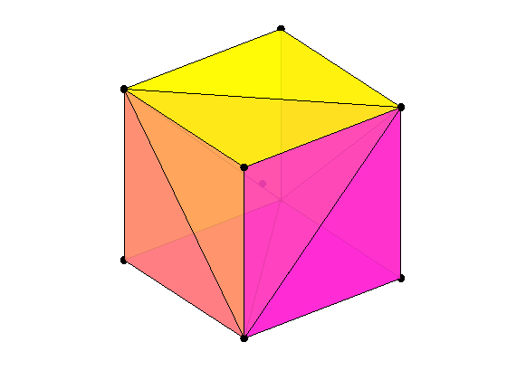
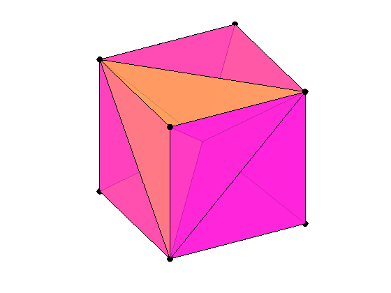
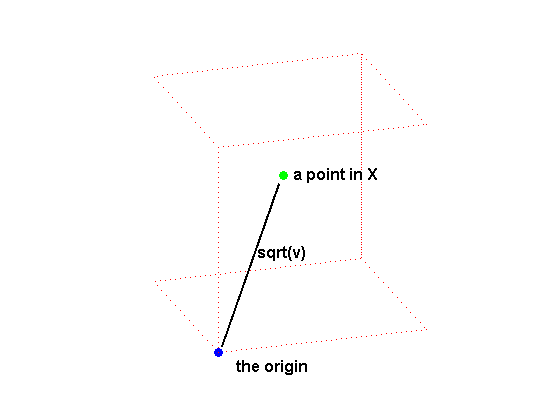
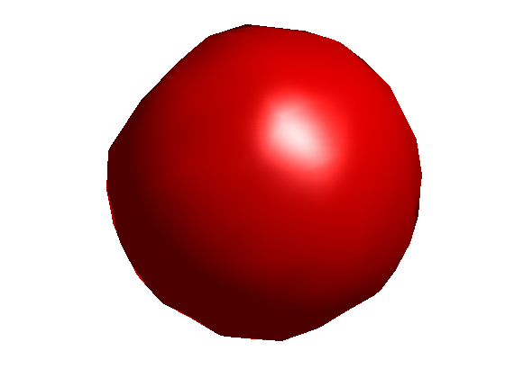

散布データのテセレーションと内挿
このデモでは、凸包、Delaunay テセレーション、および 3 次元の Voronoi 線図を説明します。3 次元的に散布しているデータを内挿する方法も示します。
化学、工学、統計学、数学などの多くの用途で、データを解析するために凸包、Delaunay テセレーション、Voronoi 線図などの構造を利用します。MATLAB® を使用すると、任意の次元でデータ セットを幾何学的に解析できます。
凸包を持つ 50 点のセットを 3 次元で示します。
% Create the data. n = 50; X = randn(n,3); % Plot the points. plot3(X(:,1),X(:,2),X(:,3),'ko','markerfacecolor','k'); % Compute the convex hull. C = convhulln(X); % Plot the convex hull. hold on for i = 1:size(C,1) j = C(i,[1 2 3 1]); patch(X(j,1),X(j,2),X(j,3),rand,'FaceAlpha',0.6); end % Modify the view. view(3), axis equal off tight vis3d; camzoom(1.2) colormap(spring) rotate3d on

中心を加えた立方体の 8 つの頂点のデータ セット X を作成できます。
X は、各行が 1 つの点の 3 次元座標となる 9 行 3 列の行列です。
% Create X. X = zeros(8,3); X([5:8,11,12,15,16,18,20,22,24]) = 1; % Corners. X(9,:) = [0.5 0.5 0.5]; % Center. % Visualize X. cla reset; hold on d = [1 2 4 3 1 5 6 8 7 5 6 2 4 8 7 3]; plot3(X(d,1),X(d,2),X(d,3),'b:'); plot3(X(:,1),X(:,2),X(:,3),'b.','markersize',20); t = text(X(:,1),X(:,2),X(:,3), num2str((1:9)')); set(t,'VerticalAlignment','bottom','FontWeight','bold', 'FontSize',12); view(3); axis equal tight off vis3d; camorbit(10,0); rotate3d on

データ セットの凸包は、データ セットを含む最小の凸領域です。立方体のデータ セット X の凸包は、CONVHULLN で計算できます。
このデータ セット X の場合、凸包には 12 の面があり、それぞれ K の行に対応しており、上で X でプロットされています。立方体は、すべての面とデータ ポイントを確認できるよう透明になっています。
% Compute the convex hull. tri = convhulln(X); % Plot the data cla reset; plot3(X(:,1),X(:,2),X(:,3),'ko','markerfacecolor','k'); % Plot the convex hull. for i = 1:size(tri,1) c = tri(i,[1 2 3 1]); patch(X(c,1),X(c,2),X(c,3),i,'FaceAlpha', 0.9); end % Modify the view. view(3); axis equal tight off vis3d rotate3d on
3 次元の Delaunay テセレーションは、いずれの 4 面体の外接球にもデータ ポイントが含まれないような 4 面体の集合です。データ セット X の Delaunay テセレーションは、DELAUNAYN で計算することができます。
T の 12 の行は、データ セット X を分割する 12 の 4 面体を表します。
% Compute the delaunay tessellation. tri = delaunayn(X); % Plot the data. plot3(X(:,1),X(:,2),X(:,3),'ko','markerfacecolor','k'); % Plot the tessellation. for i = 1:size(tri,1) y = tri(i,[1 1 1 2; 2 2 3 3; 3 4 4 4]); x1 = reshape(X(y,1),3,4); x2 = reshape(X(y,2),3,4); x3 = reshape(X(y,3),3,4); patch(x1,x2,x3,(1:4)*i,'FaceAlpha',0.8); end % Modify the view. view(3); axis equal tight off vis3d; camorbit(10,0) rotate3d on
Voronoi 線図は、各データ ポイントに対して 1 つの領域を持つ多面体の領域にデータ空間を分割します。領域内のどこでも、セット内の他のどれよりもそのデータ ポイントに隣接しています。立方体のデータ セット X の Voronoi 線図は、VORONOIN で計算することができます。
V は、Voronoi の頂点の集合です。C は、Voronoi 領域の集合を表します。データ セット X に対して、C は 9 つの Voronoi 領域を持ちます。立方体の中心点に対する領域である 1 つの Voronoi 領域を示します。
% Compute Voronoi diagram. [c,v] = voronoin(X); % Plot the data. plot3(X(d,1),X(d,2),X(d,3),'b:.',X(9,1),X(9,2),X(9,3),'k.','markersize',20); % Plot the Voronoi diagram. nx = c(v{9},:); tri = convhulln(nx); for i = 1:size(tri,1) patch(nx(tri(i,:),1),nx(tri(i,:),2),nx(tri(i,:),3),rand,'FaceAlpha',0.8); end % Modify the view. view(3); axis equal tight off vis3d; camzoom(1.5); camorbit(20,0) rotate3d on

GRIDDATAN は、多次元の散布データを内挿します。データをテセレーションするために DELAUNAYN を使用し、その後、テセレーションを元に内挿を行います。3 次元にある 500 点のランダムな点のデータ セットから始めて、これらの各点で原点からの距離を二乗する関数の値を計算します。
% Create the data. n = 500; X = 2*rand(n,3)-1; v = sum(X.^2,2); % Draw a picture to show how X is defined. cla reset; hold on plot3([0.02, 0.47],[0.02,0.57],[0.02,0.57],'k-','linewidth',2); plot3(0,0,0,'bo','markerfacecolor','b'); cube = zeros(8,3); cube([5:8,11,12,15,16,18,20,22,24]) = 1; % Corners cube(9,:) = [0.5 0.5 0.5]; % Center. plot3(cube(d,1),cube(d,2),cube(d,3),'r:'); plot3(0.5,0.6,0.6,'go','markerfacecolor','g'); text(0.02,-0.2,0,'the origin','fontsize',12,'fontweight','bold'); text(0.55,0.6,0.6,'a point in X','fontsize',12,'fontweight','bold'); text(0.28,0.3,0.35,'sqrt(v)','fontsize',12,'fontweight','bold'); view(3); axis equal tight off vis3d; camorbit(20,-10); rotate3d on
GRIDDATAN を使用すると、X とグリッド X0 上の値 v を内挿して、このグリッド上での関数値 v0 を取得できます。
黒い点は X で、赤い点はグリッド X0 です。
% Grid the data. d = -0.8:0.2:0.8; [x0,y0,z0] = meshgrid(d,d,d); X0 = [x0(:) y0(:) z0(:)]; v0 = reshape(griddatan(X,v,X0),size(x0)); % Plot results. cla reset; hold on; plot3(X(:,1),X(:,2),X(:,3),'k+','markerfacecolor','k'); plot3(X0(:,1),X0(:,2),X0(:,3),'r.','markerfacecolor','r'); view(3); axis equal tight off vis3d; camzoom(1.6); rotate3d on

関数が定数値をとるすべての点の表面を可視化するために、ISOSURFACE と ISONORMALS を使用することができます。関数は原点からの距離を二乗しているため、定数値の表面は球面になります。
c = 0.6; % constant value cla reset; hold on; h = patch(isosurface(x0,y0,z0,v0,c),'FaceColor','red','EdgeColor','none'); isonormals(x0,y0,z0,v0,h); view(3); axis equal tight off vis3d; camzoom(1.6); camlight; lighting phong rotate3d on
X のより多くのデータ ポイントと細かいグリッド X0 を使うと、計算時間は長くなりますが、球面は滑らかになります。
X の 5000 点のデータ ポイントと、0.05 のグリッド点間の距離を使用して生成される球面をあらかじめ計算してあります。
% Load saved results. load qhulldemo cla reset; hold on d = -0.8:0.05:0.8; [x0,y0,z0] = meshgrid(d,d,d); h = patch(isosurface(x0,y0,z0,v0,0.6)); isonormals(x0,y0,z0,v0,h); set(h,'FaceColor','red','EdgeColor','none'); view(3); axis equal tight off vis3d; camzoom(1.6) camlight; lighting phong rotate3d on